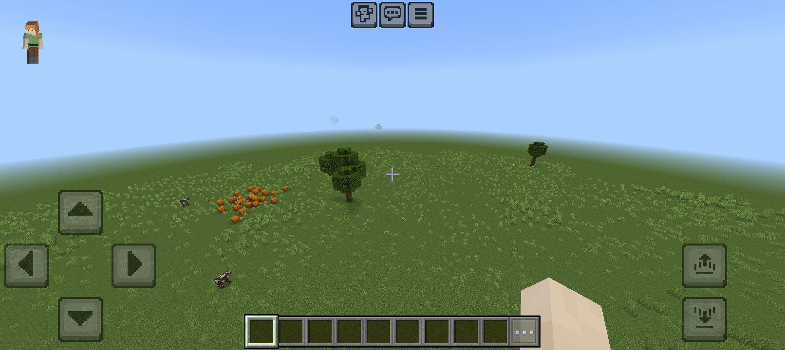
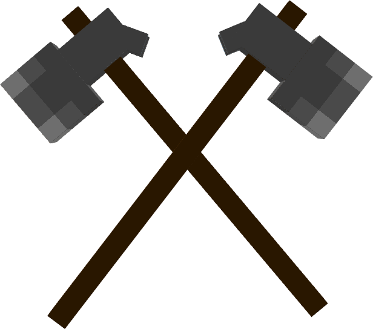

Survival Unstructured is a survival map with absolutely no structures. It was initially generated in Minecraft Java but has been adapted for Minecraft PE.
It supports Minecraft PE version 1.21
and Minecraft Java version 1.20
 and above. This map is ideal for 100-daybuilding and survival
 challenges rather than adventure. Monsters can spawn naturally. Survival Unstructured PE 1.21 Survival Unstructured PC 1.20+